Section A (multiple choice — each correct answer 1 mark, each wrong answer −0.25)
In an old Sherlock Holmes movie, a criminal kept a 12.5 cm long knife (mass 1 kg), in a 15 cm thick book (excluding thickness of the covers) with a spring trap. The spring has 25 turns each of 1 mm thickness. The spring is fixed at the back cover and the knife presses the spring to its maximum when the front cover is closed so that the turns touch each other. The design is such that if the book is held in front of the body and opened, the knife gets detached from the spring and hits the reader (Sherlock Holmes in this case). Unstretched length of the spring is equal to thickness of the book. However, Sherlock Holmes was too smart and hence he opened the book in such a way that the knife flew vertically upwards. All the energy of the spring is given to the knife, which just reached the ceiling, at a height of 5 m from the tip of the knife and got stuck there. Calculate the spring constant which satisfies the equation .
- (a) N/mm
- (b) N/mm
- (c) N/mm
- (d) N/mm
Topic: Oscillations & Waves, Conservation of Energy Metodi: Hooke’s Law, Conservation of Energy Competenze: Mathematical Modeling Objects: Spring Fonte: Testo (PDF) — p.3 Soluzione: Soluzioni (PDF)
**Sezione A (scelta multiple ogni risposta corretta 1 segno, ogni risposta sbagliata −0.25) **
In un vecchio film di Sherlock Holmes, un criminale teneva un coltello lungo 12,5 cm (massa 1 kg), in un libro di 15 cm di spessore (escluso lo spessore delle copertine) con una trappola a molla. La molla ha 25 giri di spessore di 1 mm ciascuno. La molla è fissata alla copertina posteriore e il coltello premere la molla al massimo quando la copertina anteriore è chiusa in modo che le curve si toccano. Il disegno è tale che se il libro viene tenuto davanti al corpo e aperto, il coltello si stacca dalla sorgente e colpisce il lettore (Sherlock Holmes in questo caso). La lunghezza non estesa della sorgente è uguale allo spessore del libro. Tuttavia, Sherlock Holmes era troppo intelligente e quindi ha aperto il libro in modo tale che il coltello volava verticalmente verso l’alto. Tutta l’energia della primavera viene data al coltello, che ha appena raggiunto il soffitto, ad un’altezza di 5 metri dalla punta del coltello e si è bloccato lì. Calcolare la costante di molla che soddisfa l’equazione .
- (a) N/mm
- (b) N/mm
- (c) N/mm
- (d) N/mm
Topic: Oscillations & Waves, Conservation of Energy Metodi: Hooke’s Law, Conservation of Energy Competenze: Mathematical Modeling Objects: Spring Fonte: Testo (PDF) — p.3 Soluzione: Soluzioni (PDF)
The focal length of a biconvex lens made of a soft material can be changed by changing its shape. An object was brought from far away to near the biconvex lens. For each option given below, the first (left side) graph gives dependence of on as the shape of the lens is changed, and the second graph gives corresponding dependence of on . Here , and have standard meanings and all images are real. Which of the following options is the correct representation of that lens?
Quesito 2
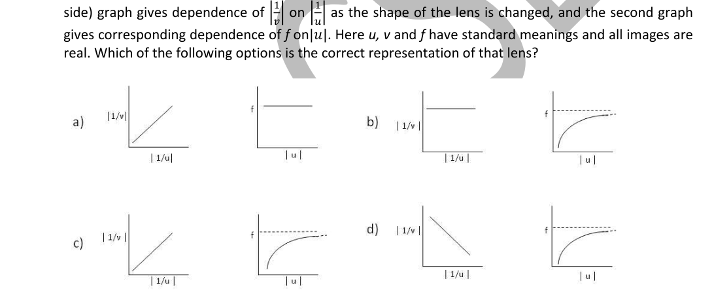
- (a) See figure, option (a)
- (b) See figure, option (b)
- (c) See figure, option (c)
- (d) See figure, option (d)
Topic: Geometric Optics Metodi: Thin Lens & Mirror Equation, Graph Linearization Competenze: Graph Linearization Objects: Lens Fonte: Testo (PDF) — p.3 Soluzione: Soluzioni (PDF)
La lunghezza focale di una lente biconvexa fatta di materiale morbido può essere modificata modificando la sua forma. Un oggetto fu portato da lontano vicino alla lente biconvexa. Per ogni opzione indicata di seguito, il primo grafico (sinistra) dà dipendenza di su in quanto la forma della lente viene modificata, e il secondo grafico dà la corrispondente dipendenza di su . Qui , e hanno significati standard e tutte le immagini sono reali. Quale delle seguenti opzioni è la rappresentazione corretta di quella lente?
Quesito 2
- a) V. figura, opzione a)
- (b) V. figura, opzione (b)
- c) V. figura, opzione c)
- (d) V. figura, opzione (d)
Topic: Geometric Optics Metodi: Thin Lens & Mirror Equation, Graph Linearization Competenze: Graph Linearization Objects: Lens Fonte: Testo (PDF) — p.3 Soluzione: Soluzioni (PDF)
A black dot has a mass of about one femtogram. Assuming that the dot is made up of carbon only, calculate the approximate number of carbon atoms present in the dot.
- (a)
- (b)
- (c)
- (d)
Topic: Order-of-Magnitude Estimation, Chemistry Metodi: Order-of-Magnitude Estimation Competenze: Estimation & Approximation Objects: Atom Fonte: Testo (PDF) — p.3 Soluzione: Soluzioni (PDF)
Un punto nero ha una massa di circa un femtogramma. Supponendo che il punto sia composto solo di carbonio, calcola il numero approssimativo di atomi di carbonio presenti nel punto.
- (a)
- (b)
- (c)
- (d)
Topic: Order-of-Magnitude Estimation, Chemistry Metodi: Order-of-Magnitude Estimation Competenze: Estimation & Approximation Objects: Atom Fonte: Testo (PDF) — p.3 Soluzione: Soluzioni (PDF)
Among the following, the third strongest energy is highest for which one of the following elements?
- (a) Boron
- (b) Magnesium
- (c) Aluminium
- (d) Beryllium
Topic: Chemistry Metodi: Physical Modeling Competenze: Physical Reasoning Objects: — Fonte: Testo (PDF) — p.3 Soluzione: Soluzioni (PDF)
Tra i seguenti elementi, quale è la terza energia più forte per cui è più elevata?
- a) Borone
- b) Magnesio
- c) alluminio
- d) Berillio
Topic: Chemistry Metodi: Physical Modeling Competenze: Physical Reasoning Objects: — Fonte: Testo (PDF) — p.3 Soluzione: Soluzioni (PDF)
In a hypothetical situation, a cell was found to lack rough endoplasmic reticulum. Which one of the following activities was all likely absent in this cell?
- (a) Transcription
- (b) Translation
- (c) Synthesis of secretory proteins
- (d) Manufacture of fat molecules or lipids
Topic: Biology Metodi: Physical Modeling Competenze: Physical Reasoning Objects: — Fonte: Testo (PDF) — p.4 Soluzione: Soluzioni (PDF)
In una situazione ipotetica, si è scoperto che una cellula non ha un reticolo endoplasmico rugoso. Quale delle seguenti attività era probabilmente assente in questa cella?
- a) Trascrizione
- b) Traduzione
- c) Sintesi di proteine secretrici
- d) Fabbricazione di molecole di grasso o di lipidi
Topic: Biology Metodi: Physical Modeling Competenze: Physical Reasoning Objects: — Fonte: Testo (PDF) — p.4 Soluzione: Soluzioni (PDF)
In a laboratory, a plane mirror and a student move with velocities as shown in the figure. The X and Y components of the velocity (in m/s) of the image (of the student), as seen by the student, are respectively
Quesito 6
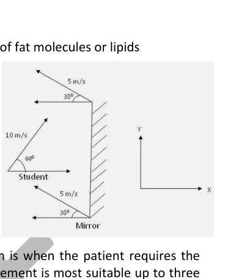
- (a) , Zero
- (b) ,
- (c) , Zero
- (d) , Zero
Topic: Geometric Optics Metodi: Ray Tracing, Vector Decomposition Competenze: Physical Reasoning Objects: Mirror Fonte: Testo (PDF) — p.4 Soluzione: Soluzioni (PDF)
In un laboratorio, uno specchio aereo e uno studente si muovono con velocità come mostrato nella figura. Le componenti X e Y della velocità (in m/s) dell’immagine (dall’allievo), come osservato dall’allievo, sono rispettivamente
Quesito 6
- a) , Zero
- (b) ,
- c) , Zero
- (d) , Zero
Topic: Geometric Optics Metodi: Ray Tracing, Vector Decomposition Competenze: Physical Reasoning Objects: Mirror Fonte: Testo (PDF) — p.4 Soluzione: Soluzioni (PDF)
In their transplantation, the first three months after the most care and post-surgery monitoring. Which of the following statement is most suitable up to three months for a patient who has undergone liver-transplantation recently?
- (a) She will require no drugs but only care and follow ups.
- (b) She will be treated with immunosuppressive drugs only.
- (c) She will be treated with antibiotics only.
- (d) She will be treated with combination of immunosuppressive drugs and antibiotics.
Topic: Biology Metodi: Physical Modeling Competenze: Physical Reasoning Objects: — Fonte: Testo (PDF) — p.4 Soluzione: Soluzioni (PDF)
Nel loro trapianto, i primi tre mesi dopo la massima cura e il monitoraggio post-chirurgico. Quale delle seguenti affermazioni è più adatta fino a tre mesi per un paziente che ha subito un trapianto di fegato recentemente?
- (a) Non richiederà farmaci, ma solo cure e follow-up.
- (b) Sarà trattata solo con farmaci immunosoppressivi.
- (c) Lei sarà trattata solo con antibiotici.
- (d) Sarà trattata con una combinazione di farmaci immunosoppressivi e antibiotici.
Topic: Biology Metodi: Physical Modeling Competenze: Physical Reasoning Objects: — Fonte: Testo (PDF) — p.4 Soluzione: Soluzioni (PDF)
While driving on a level road at 72 kmph, Vinayak observes the traffic signal turning red, the (white) stopping line being 52 m away from the front end of his car. Immediately he applies the brakes that decelerate his car at m/s. How far from the stopping line will the front end of Vinayak’s car be after 6 seconds?
- (a) Zero
- (b) 2 m
- (c) 4 m
- (d) 6 m
Topic: Newtonian Mechanics Metodi: Kinematic Equations Competenze: Physical Reasoning Objects: — Fonte: Testo (PDF) — p.4 Soluzione: Soluzioni (PDF)
Mentre guida su una strada piatta a 72 km/h, Vinayak osserva il segnale di traffico diventare rosso, mentre la linea di fermo (bianca) è a 52 metri dalla parte anteriore della sua auto. Applica immediatamente i freni che rallentano la sua auto a m/s. Quanto lontano sarà la parte anteriore della macchina di Vinayak dopo sei secondi?
- a) Zero
- (b) 2 m
- (c) 4 m
- (d) 6 m
Topic: Newtonian Mechanics Metodi: Kinematic Equations Competenze: Physical Reasoning Objects: — Fonte: Testo (PDF) — p.4 Soluzione: Soluzioni (PDF)
When a mixture of 80mL of carbon monoxide and 40mL of oxygen is sparked, mixture A is obtained. Mixture A is passed through aqueous potassium hydroxide to yield mixture B. The volumes of mixtures A and B respectively are
- (a) 70mL, 10mL
- (b) 40mL, 20mL
- (c) 60mL, 20mL
- (d) 80mL, 10mL
Topic: Chemistry Metodi: Physical Modeling Competenze: Physical Reasoning Objects: Gas Fonte: Testo (PDF) — p.4 Soluzione: Soluzioni (PDF)
Quando viene attivata una miscela di monossido di carbonio di 80 ml e di ossigeno di 40 ml, viene ottenuta la miscela A. La miscela A viene trasmessa attraverso idrossido di potassio acquoso per produrre la miscela B. I volumi delle miscele A e B sono rispettivamente:
- (a) 70mL, 10mL
- (b) 40mL, 20mL
- (c) 60mL, 20mL
- (d) 80mL, 10mL
Topic: Chemistry Metodi: Physical Modeling Competenze: Physical Reasoning Objects: Gas Fonte: Testo (PDF) — p.4 Soluzione: Soluzioni (PDF)
A convex mirror of radius of curvature 12 cm has its principal axis horizontal. A simple pendulum with a tiny bob is oscillating in front of the mirror such that the centre of mass of the bob is 12 cm away from the mirror along the principal axis. Amplitude of oscillation is 3 cm and there is practically no damping. Length of the pendulum is sufficiently large and the plane of oscillation is such that the bob moves practically along the principal axis of the mirror. Path length of the image of the bob formed by the mirror is:
- (a) 4 cm
- (b) 2 cm
- (c) 0.7 cm
- (d) 8 cm
Topic: Geometric Optics, Oscillations & Waves Metodi: Thin Lens & Mirror Equation Competenze: Physical Reasoning Objects: Mirror, Pendulum Fonte: Testo (PDF) — p.4 Soluzione: Soluzioni (PDF)
Lo specchio convexo di raggio di curvatura di 12 cm ha il suo asse principale orizzontale. Un semplice pendolo con un piccolo bobino oscilla davanti allo specchio in modo tale che il centro di massa del bobino sia a 12 cm dallo specchio lungo l’asse principale. L’ampiezza di oscillazione è di 3 cm e non c’è praticamente alcun ammortizzamento. La lunghezza del pendolo è sufficientemente grande e il piano di oscillazione è tale che la bobina si muove praticamente lungo l’asse principale dello specchio. La lunghezza del percorso dell’immagine del bobbinato formato dallo specchio è:
- (a) 4 cm
- (b) 2 cm
- (c) 0.7 cm
- (d) 8 cm
Topic: Geometric Optics, Oscillations & Waves Metodi: Thin Lens & Mirror Equation Competenze: Physical Reasoning Objects: Mirror, Pendulum Fonte: Testo (PDF) — p.4 Soluzione: Soluzioni (PDF)
Choose the correct sequence of the following ions in increasing order of their ionic radii.
- (a)
- (b)
- (c)
- (d)
Topic: Chemistry Metodi: Physical Modeling Competenze: Physical Reasoning Objects: — Fonte: Testo (PDF) — p.4 Soluzione: Soluzioni (PDF)
Scegliere la corretta sequenza dei seguenti ioni in ordine crescente dei loro raggi ionici.
- (a)
- (b)
- (c)
- (d)
Topic: Chemistry Metodi: Physical Modeling Competenze: Physical Reasoning Objects: — Fonte: Testo (PDF) — p.4 Soluzione: Soluzioni (PDF)
A point source of light B is placed at a distance in front of the centre of a mirror of horizontal length fixed on a wall. A man walks in front of the mirror and parallel to it at a distance from it as shown in the figure. The greatest distance over which he can see the image of the light source in the mirror is
Quesito 12
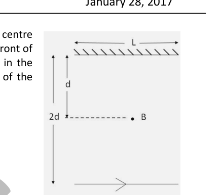
- (a)
- (b)
- (c)
- (d)
Topic: Geometric Optics Metodi: Ray Tracing Competenze: Diagrammatic Reasoning Objects: Mirror Fonte: Testo (PDF) — p.5 Soluzione: Soluzioni (PDF)
Una fonte di luce a punto B è posta a una distanza davanti al centro di uno specchio di lunghezza orizzontale fissato su una parete. Un uomo cammina davanti allo specchio e in parallelo a esso a una distanza da esso come mostrato nella figura. La distanza più grande da cui può vedere l’ immagine della fonte luminosa nello specchio è
Quesito 12
- (a)
- (b)
- (c)
- (d)
Topic: Geometric Optics Metodi: Ray Tracing Competenze: Diagrammatic Reasoning Objects: Mirror Fonte: Testo (PDF) — p.5 Soluzione: Soluzioni (PDF)
A group of biology students on excursion to Goa beaches collected the following animal samples.
Quesito 13
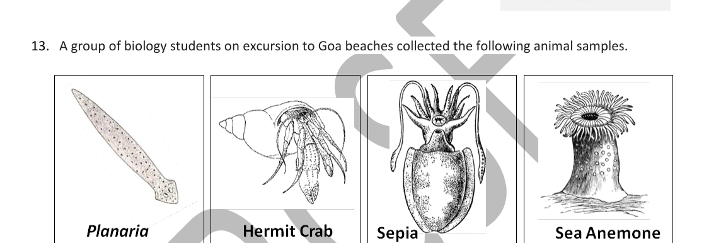
While they were putting the animals in the jar with sea water, they noticed that one of the animal’s 1/3 body part was missing. The injured animal (with only 2/3 of its body) was brought to the lab and was allowed to grow in the laboratory in appropriate condition. To their surprise the lost body part of the animal had regenerated. Which of the above animal would have been collected?
- (a) Planaria
- (b) Hermit Crab
- (c) Sepia
- (d) Sea anemone
Topic: Biology Metodi: Physical Modeling Competenze: Physical Reasoning Objects: — Fonte: Testo (PDF) — p.5 Soluzione: Soluzioni (PDF)
Un gruppo di studenti di biologia in escursione sulle spiagge di Goa ha raccolto i seguenti campioni di animali.
Quesito 13
While they were putting the animals in the jar with sea water, they noticed that one of the animal’s 1/3 body part was missing. L’ animale ferito (con solo 2/3 del suo corpo) è stato portato in laboratorio e è stato permesso di crescere in laboratorio in condizioni adeguate. Per loro sorpresa la parte del corpo del animale che era stata persa si era rigenerata. Quale animale sarebbe stato raccolto?
- a) Planaria
- b) Granchio di ermitto
- (c) Sepia
- (d) Anemone marine
Topic: Biology Metodi: Physical Modeling Competenze: Physical Reasoning Objects: — Fonte: Testo (PDF) — p.5 Soluzione: Soluzioni (PDF)
A buoy, of height 2 m, is floating in the sea. A wave of amplitude 0.5 m and wavelength base of the buoy, passes the buoy. The maximum tilt of the buoy (from the vertical) will practically
- (a) Depend on the amplitude only.
- (b) Depend on the frequency only.
- (c) Depend on both frequency and amplitude.
- (d) be 90°.
Topic: Oscillations & Waves, Fluid Mechanics Metodi: Physical Modeling Competenze: Physical Reasoning Objects: — Fonte: Testo (PDF) — p.5 Soluzione: Soluzioni (PDF)
Una boia, alta 2 metri, galleggia nel mare. Una onda di amplitudine di 0,5 m e lunghezza d’onda della base della boia, passa la boia. L’inclinazione massima della boia (da verticale) sarà praticamente
- (a) Dipende solo dall’ampiezza.
- (b) Dipende solo dalla frequenza.
- (c) Dipende sia dalla frequenza che dall’ampiezza.
- (d) be 90°.
Topic: Oscillations & Waves, Fluid Mechanics Metodi: Physical Modeling Competenze: Physical Reasoning Objects: — Fonte: Testo (PDF) — p.5 Soluzione: Soluzioni (PDF)
A compound exists in the gaseous state both as monomer (A) and dimer (A). The molecular weight of the monomer is 48. In an experiment, 96 g of the compound was confined in a vessel of volume 33.6 litres and heated to 273°C. Calculate the pressure developed, if the compound exists as a dimer to the extent of 50% by weight under this condition, assuming that temperature does not affect the physical state of the dimer.
- (a) 0.67 atm
- (b) 1 atm
- (c) 1.33 atm
- (d) 2 atm
Topic: Kinetic Theory, Chemistry Metodi: Ideal Gas Law Competenze: Mathematical Modeling Objects: Gas, Container Fonte: Testo (PDF) — p.5 Soluzione: Soluzioni (PDF)
Un composto esiste nello stato gassoso sia come monomero (A) che come dimero (A). Il peso molecolare del monomero è 48. In un esperimento, 96 g del composto sono stati contenuti in un recipiente di volume di 33,6 litri e riscaldati a 273°C. Calcolare la pressione sviluppata, se il composto esiste come dimere fino al 50% in peso in questa condizione, supponendo che la temperatura non influisca sullo stato fisico del dimere.
- a) 0,67 atm
- b) 1 ATM
- c) 1,33 atm
- 2 atm
Topic: Kinetic Theory, Chemistry Metodi: Ideal Gas Law Competenze: Mathematical Modeling Objects: Gas, Container Fonte: Testo (PDF) — p.5 Soluzione: Soluzioni (PDF)
A sound wave of fixed frequency is going through a medium in the X direction. Ignore the velocities of the particles due to thermal motion and assume that the layers of the medium perform simple harmonic motions about their mean positions. The graph in the figure represents displacements of the particles from their mean positions (plotted on Y axis) at a particular instant of time. Some of the particles are labeled by alphabets a–s. Velocity of the particle G is directed negative at that instant. Points C, I and O correspond to maximum displacement at that instant.
Quesito 16
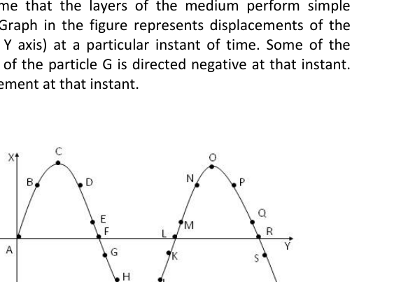
I) The sound wave is travelling along the negative X direction. II) The sound wave is travelling along the positive X direction. III) Particles C, I and O are possessing maximum kinetic energy at the given instant. IV) Particles F, L and R are possessing maximum kinetic energy at the given instant.
- (a) Only I and IV are correct.
- (b) Only II and III are correct.
- (c) Only I and III are correct.
- (d) Only II and IV are correct.
Topic: Oscillations & Waves Metodi: Wave Equation, Simple Harmonic Motion Analysis Competenze: Diagrammatic Reasoning Objects: — Fonte: Testo (PDF) — p.6 Soluzione: Soluzioni (PDF)
Un’onda sonora di frequenza fissa sta attraversando un mezzo nella direzione X. Ignorare le velocità delle particelle dovute al movimento termico e supporre che gli strati del mezzo eseguano semplici movimenti armonici circa le loro posizioni medie. Il grafico nella figura rappresenta i spostamenti delle particelle dalle loro posizioni medie (graficati sull’asse Y) in un determinato istante di tempo. Alcune delle particelle sono etichettate con gli alfabeti as. La velocità della particella G è diretta negativamente in quel momento. I punti C, I e O corrispondono al spostamento massimo in quel momento.
Quesito 16
I) L’onda sonora si muove in direzione X negativa. II) L’onda sonora si muove in direzione X positiva. III) Le particelle C, I e O hanno l’energia cinetica massima all’istante dato. IV) Le particelle F, L e R hanno l’energia cinetica massima all’istante dato.
- (a) Solo I e IV sono corretti.
- b) Solo II e III sono corretti.
- (c) Solo I e III sono corretti.
- d) Solo II e IV sono corretti.
Topic: Oscillations & Waves Metodi: Wave Equation, Simple Harmonic Motion Analysis Competenze: Diagrammatic Reasoning Objects: — Fonte: Testo (PDF) — p.6 Soluzione: Soluzioni (PDF)
Seven resistances are connected as shown in the figure. Resistance of the conducting wires is negligible. Effective resistance between A and B is
Quesito 17
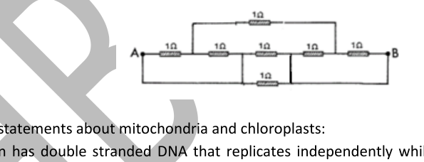
- (a)
- (b)
- (c)
- (d)
Topic: Circuits Metodi: Equivalent Circuit Reduction Competenze: Physical Reasoning Objects: Resistor, Wire Fonte: Testo (PDF) — p.6 Soluzione: Soluzioni (PDF)
Sette resistenze sono collegate come mostrato nella figura. La resistenza dei fili conduttori è trascurabile. La resistenza effettiva tra A e B è
Quesito 17
- (a)
- (b)
- (c)
- (d)
Topic: Circuits Metodi: Equivalent Circuit Reduction Competenze: Physical Reasoning Objects: Resistor, Wire Fonte: Testo (PDF) — p.6 Soluzione: Soluzioni (PDF)
Following are some statements about mitochondria and chloroplasts:
I. Mitochondrion has double stranded DNA that replicates independently while chloroplast does not have the same. II. Both mitochondria and chloroplast have double stranded DNA that replicates independently. III. Both mitochondria and chloroplast have single stranded DNA replicating independently. IV. Mitochondria and chloroplast have both RNA and ribosomes.
Which of the above statements are correct?
- (a) Both I and IV
- (b) Both III and IV
- (c) Both II and III
- (d) Both II and IV
Topic: Biology Metodi: Physical Modeling Competenze: Physical Reasoning Objects: — Fonte: Testo (PDF) — p.6 Soluzione: Soluzioni (PDF)
Di seguito sono riportate alcune affermazioni relative ai mitocondri e ai cloroplasti:
I. Il mitocondrio ha un DNA a doppia stringa che si replica indipendentemente mentre il cloroplast non ha lo stesso. II. Sia i mitocondri che i cloroplasti hanno un DNA a doppio strato che si riproduce in modo indipendente. III. Il Sia i mitocondri che i cloroplasti hanno un DNA singolo che si riproduce indipendentemente. IV. I mitocondri e i cloroplasti hanno sia RNA che ribosomi.
Quali delle affermazioni sopra esposte sono corrette?
- a) Sia I che IV
- b) Sia III che IV
- c) Sia II che III
- d) Sia II che IV
Topic: Biology Metodi: Physical Modeling Competenze: Physical Reasoning Objects: — Fonte: Testo (PDF) — p.6 Soluzione: Soluzioni (PDF)
A solution of pure ferric sulphate containing 0.140g of ferric ions is treated with excess of barium hydroxide solution. Total weight of the precipitate will be.
- (a) 0.87g
- (b) 1.14g
- (c) 0.25 g
- (d) 0.56g
Topic: Chemistry Metodi: Physical Modeling Competenze: Significant Figures Objects: — Fonte: Testo (PDF) — p.6 Soluzione: Soluzioni (PDF)
Una soluzione di solfato ferrico puro contenente 0,140 g di ioni ferrici viene trattata con un eccesso di soluzione di idrossido di bario. Il peso totale del precipitato sarà.
- (a) 0.87g
- (b) 1.14g
- (c) 0.25 g
- (d) 0.56g
Topic: Chemistry Metodi: Physical Modeling Competenze: Significant Figures Objects: — Fonte: Testo (PDF) — p.6 Soluzione: Soluzioni (PDF)
P, Q, R are different colourless solids, while S is a colourless solution. They are (in random order) Sodium chloride (NaCl), Calcium Carbonate (CaCO), Acetic acid (CHCOOH) and Phenolphthalein indicator. Small amount of the above substances were added in pairs (e.g. P with Q, Q with R etc.) to a small amount of water in a test tube. They give the following results as shown in the observation table.
Observations table:
| P | Q | R | |
|---|---|---|---|
| Q | No reaction | – | No reaction |
| R | Dark Pink Colour | No reaction | |
| S | No reaction | No reaction | Effervescence |
Then the chemicals are
- (a) P=NaCl, Q=CaCO, R=CHCOOH, S=Phenolphthalein
- (b) P=Phenolphthalein, Q=NaCl, R=CaCO, S=CHCOOH
- (c) P=CHCOOH, Q=Phenolphthalein, R=NaCl, S=CaCO
- (d) P=CaCO, Q=CHCOOH, R=Phenolphthalein, S=NaCl
Topic: Chemistry Metodi: Experimental Data Analysis Competenze: Physical Reasoning Objects: — Fonte: Testo (PDF) — p.7 Soluzione: Soluzioni (PDF)
P, Q, R sono solidi incolori diversi, mentre S è una soluzione incolora. Sono (in ordine casuale) cloruro di sodio (NaCl), carbonato di calcio (CaCO), acido aceto (CH COOH) e indicatore di fenolftalei. Sono state aggiunte piccole quantità di sostanze di cui sopra in coppie (ad es. P con Q, Q con R, ecc.) a una piccola quantità di acqua in un tubo di prova. Essi danno i seguenti risultati, come mostrato nella tabella di osservazione.
**Tabella di osservazioni: **
| P | Q | R |
|---|
# Non c’è reazione # # Non c’è reazione
# # # # # # # # # # # # # # # # # # # # # # # # # # # # # # # # # # # # # # # # # # # # # # # # # # # # # # # # # # # # # # # # # # # # # # # # # # # # # # # # # # # # # # # # # # # # # # # # # # # # # # # # # # # # # # # # # # # # # # # # # # # # # # # # # # # # # # # # # # # # # # # # # # # # # # # # # # # # # # # # # # # # # # # # # # # # # # # # # # # # # # # # # # # # # # # # # # # # # # # # # # # # # # # # # # # # # # # # # # # # # # # # # # # # # # # # # # # # # # # # # # # # # # # # # # # # # # # # # # # # # # # # # # # # # # # # # # # # # # # # # # # # # # # # # # # # # # # # # # # # # # # # # # # # # # # # # # # # # # # # # # # # # # # # # # # # # # # # # # # # # # # # # # # # # # # # # # # # # # # # # # # # # # # # # # # # # # # # # # # # # # # # # # # # # # # # # # # # # # # # # # # # # # # # # # # # # # # # # # # # # # # # # # # # # # # # # # # # # # # # # # # # # # # # # # # # # # # # # # # # # # # # # # # # # # # # # # # # # # # # # # # # # # # # # # # # # # # # # # # # # # # # # # # # #
# Non c’è reazione # # non c’è reazione # # non c’è effervescenza
Allora le sostanze chimiche sono
- (a) P=NaCl, Q=CaCO, R=CHCOOH, S=Fenolftalei
- (b) P=fenolftalea, Q=NaCl, R=CaCO, S=CHCOOH
- (c) P=CHCOOH, Q=Fenolftaelina, R=NaCl, S=CaCO
- (d) P=CaCO, Q=CHCOOH, R=Fenolftalei, S=NaCl
Topic: Chemistry Metodi: Experimental Data Analysis Competenze: Physical Reasoning Objects: — Fonte: Testo (PDF) — p.7 Soluzione: Soluzioni (PDF)
Fishes such as Salmon are called as anadromous fish. They are born in fresh water. However, then they migrate to the sea and spend most of their life in the sea. They return to fresh water to spawn. On the contrary, catadromous fishes such as Eels do the opposite. They live in fresh water for their entire life. They migrate to the sea to spawn.
Quesito 21
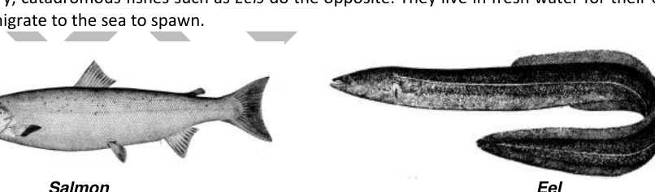
Which one of the following strategies will Salmon adopt in order to manage the problem of osmoregulation when it is in the sea?
- (a) Salmon drinks profusely in sea and it drinks feebly in fresh water.
- (b) It produces large volume of dilute urine in sea water.
- (c) In sea water, gills filter NaCl which is absorbed selectively into its body.
- (d) The mode of excretion of Salmon is changed from ammonia to uric acid.
Topic: Biology Metodi: Physical Modeling Competenze: Physical Reasoning Objects: — Fonte: Testo (PDF) — p.7 Soluzione: Soluzioni (PDF)
Pesci come il salmone sono chiamati pesci anadromici. Sono nati in acqua dolce. Tuttavia, poi migrano in mare e trascorrono la maggior parte della loro vita in mare. Tornano all’acqua dolce per spacciare. Al contrario, i pesci catadromici come gli anguilla fanno il contrario. Vivono in acqua dolce per tutta la vita. Migriano in mare per far nascere.
Quesito 21
Quale delle seguenti strategie sarà adottata dal Salmone per gestire il problema dell’osmoregulazione quando si trova in mare?
- (a) Il salmone beve abbondantemente in mare e beve debilmente in acqua dolce.
- b) Produce un grande volume di urina diluita nell’acqua di mare.
- (c) Nell’acqua di mare, le branchi filtrano il NaCl che viene assorbito selettivamente nel suo corpo.
- (d) Il modo di escretione del salmone viene modificato dall’ammoniaco all’acido urico.
Topic: Biology Metodi: Physical Modeling Competenze: Physical Reasoning Objects: — Fonte: Testo (PDF) — p.7 Soluzione: Soluzioni (PDF)
Four metals are different in their activity series, extraction of these metals from their ores involves oxidation and reduction. Match the metals with their extraction processes.
| Metal-ore | Processes |
|---|---|
| 1. Cinnabar | I. Oxidation and reduction |
| 2. Zincblende | II. Oxidation |
| 3. Hematite | III. Electrolysis |
| 4. Galena | IV. Reduction |
- (a) 1-I, 2-II, 3-IV, 4-II
- (b) 1-II, 2-I, 3-IV, 4-I
- (c) 1-2, 3-II, 4-III, 4-IV
- (d) 1-IV, 2-III, 3-III, 4-I
Topic: Chemistry Metodi: Physical Modeling Competenze: Physical Reasoning Objects: — Fonte: Testo (PDF) — p.8 Soluzione: Soluzioni (PDF)
Quattro metalli sono diversi nella loro serie di attività, l’estrazione di questi metalli dai loro minerali comporta ossidazione e riduzione. Concorre i metalli con i loro processi di estrazione.
♬ Metal ore ♬ Processi ♬ |---|---| | 1. Cinnabar, io. Oxidazione e riduzione | 2. Zincblende II. L’ossidazione . | 3. Ematite III. L’ elettroliesi . | 4. Galena IV. Riduzione.
- (a) 1-I, 2-II, 3-IV, 4-II
- (b) 1-II, 2-I, 3-IV, 4-I
- c) 1-2, 3-II, 4-III, 4-IV
- d) 1-IV, 2-III, 3-III, 4-I
Topic: Chemistry Metodi: Physical Modeling Competenze: Physical Reasoning Objects: — Fonte: Testo (PDF) — p.8 Soluzione: Soluzioni (PDF)
In a hypothetical experiment the outer tissues of the woody part of the stem of a dicotyledonous plant is removed in the form of a ring, leaving only the xylem and pith intact. Which one of the statements is most likely to be correct?
- (a) Water transport from the root to leaves will be obstructed but food transport from leaves to stem will be unhindered.
- (b) Water transport from the root to leaves will not be obstructed but food transport from leaves to stem will be hindered.
- (c) Water transport from root to leaves will not be obstructed but food transport down the leaves stops at the ring.
- (d) Water transport from root to leaves is obstructed but food transport down from the leaves stops at the ring.
Topic: Biology Metodi: Physical Modeling Competenze: Physical Reasoning Objects: — Fonte: Testo (PDF) — p.8 Soluzione: Soluzioni (PDF)
In un esperimento ipotetico i tessuti esterni della parte legnosa dello stemma di una pianta dicotyledono sono rimossi sotto forma di anello, lasciando intatti solo il xilemo e il pit. Quale delle affermazioni è più probabile che sia corretta?
- a) Il trasporto dell’acqua dalla radice alle foglie sarà ostacolato, ma il trasporto degli alimenti dalle foglie al tronco sarà libero.
- b) Il trasporto dell’acqua dalla radice alle foglie non sarà ostacolato, ma il trasporto degli alimenti dalle foglie al tronco sarà ostacolato.
- (c) Il trasporto dell’acqua dalla radice alle foglie non sarà ostacolato, ma il trasporto dei cibi lungo le foglie si ferma all’anello.
- (d) Il trasporto dell’acqua dalla radice alle foglie è ostacolato, ma il trasporto dei cibi dalle foglie si ferma all’anello.
Topic: Biology Metodi: Physical Modeling Competenze: Physical Reasoning Objects: — Fonte: Testo (PDF) — p.8 Soluzione: Soluzioni (PDF)
In an experiment involving treatments to demonstrate transpiration, six experimental setups were as follows:
I. Woody plant with leaves coated with Vaseline jelly II. Woody plant with only stem coated with Vaseline jelly III. Woody plant without any coating of Vaseline jelly IV. Herbaceous plant with only stem coated with Vaseline jelly V. Herbaceous plant with only leaf coated with Vaseline jelly VI. Herbaceous plant without any coating of Vaseline jelly
The colour change of CoCl paper (changes from blue to pink when wet) was attached to the leaves and stem. The plants were well watered and kept under adequate sunlight. The following were grouped:
| Colour change of CoCl paper on | ||
|---|---|---|
| Plants | Leaves | Stem |
| I | Blue | Blue |
| II | Pink | Blue |
| III | Pink | Blue |
| IV | Blue | Blue |
| V | Blue | Pink |
| VI | Pink | Pink |
Which of the above is correct?
- (a) I, II and V
- (b) Only II
- (c) III, IV and VI
- (d) Only V
Topic: Biology Metodi: Experimental Data Analysis Competenze: Experimental Data Analysis Objects: — Fonte: Testo (PDF) — p.8 Soluzione: Soluzioni (PDF)
In un esperimento che ha coinvolto trattamenti per dimostrare la traspirazione, sei setup sperimentali sono stati i seguenti:
I. Pianta di legno con foglie rivestite di gelatina di vaselina II. Pianta di legno con solo tronco rivestito di gelatina di vaselina III. Il Pianta di legno senza rivestimento di gelatina di vaselina IV. Pianta erbaccia con solo tronco rivestito di gelatina di vaselina V. Pianta erbaccia con solo foglia rivestita di gelatina di vaselina VI. Piante erbacche senza rivestimento di gelatina di vaselina
Il cambiamento di colore della carta CoCl (di blu a rosa quando bagnata) è stato attaccato alle foglie e al tronco. Le piante erano ben idratate e tenute sotto adeguata luce solare. Sono stati raggruppati:
| Colour change of CoCl paper on | ||
|---|---|---|
| Plants | Leaves | Stem |
Io Blu Blu
II # Rosa # Blu
Il terzo rosa # # L’ azzurro
# 4 Blu Blu
V, Blu, Rosa
Vivo rosa # # rosa
Quale di queste è corretta?
- a) I, II e V
- b) Solo II
- c) III, IV e VI
- (d) Solo V
Topic: Biology Metodi: Experimental Data Analysis Competenze: Experimental Data Analysis Objects: — Fonte: Testo (PDF) — p.8 Soluzione: Soluzioni (PDF)
Bones, ligaments and muscles are structures that are considered to be lever system in the body for human movement. Classically, the levers are represented as: first, second and third (I, II and III), classes of levers depending on their relative positions of the fulcrum, effort and resistance (or load). Given below are few body part movements (represented as P = backward bending of neck, Q = walking on toe and R = folding of arm) which can be compared to specific classes of levers. From the options below identify the correct combination of body part to that of a class of lever.
Quesito 25
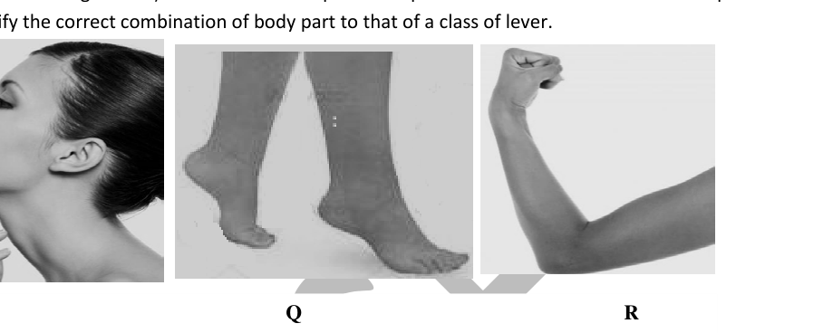
- (a) P-I, Q-II, R-III
- (b) P-II, Q-III, R-I
- (c) P-III, Q-I, R-II
- (d) P-III, Q-II, R-I
Topic: Biology, Rigid Body Statics Metodi: Torque & Angular Momentum Analysis Competenze: Physical Reasoning Objects: Lever Fonte: Testo (PDF) — p.9 Soluzione: Soluzioni (PDF)
Ossa, legamenti e muscoli sono strutture che sono considerate come leva del corpo per il movimento umano. In classiche modalità, le leve sono rappresentate come: prima, seconda e terza (I, II e III), classi di leve a seconda delle loro posizioni relative del fulcro, dello sforzo e della resistenza (o del carico). In seguito sono riportati pochi movimenti delle parti del corpo (representati come P = piega al collo verso l’indietro, Q = camminare sul piede e R = piega del braccio) che possono essere confrontati con specifiche classi di leve. Le opzioni seguenti indicano la corretta combinazione di parte del corpo con quella di una classe di leva.
Quesito 25
- a) P-I, Q-II, R-III
- b) P-II, Q-III, R-I
- (c) P-III, Q-I, R-II
- d) P-III, Q-II, R-I
Topic: Biology, Rigid Body Statics Metodi: Torque & Angular Momentum Analysis Competenze: Physical Reasoning Objects: Lever Fonte: Testo (PDF) — p.9 Soluzione: Soluzioni (PDF)
The chart represents the relationships between some plants. In the scheme (P) to (S) represent characters which distinguish one example from the next.
Quesito 26
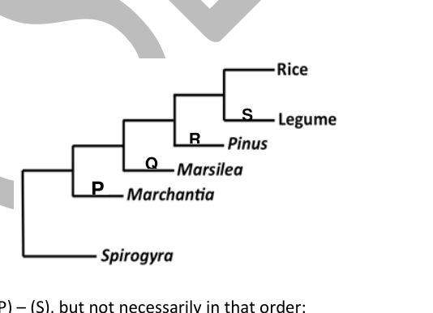
(i) to (v) below represent some characters related to (P) – (S), but not necessarily in that order:
i. Without vascular tissue ii. Seeds have two cotyledons iii. Seeds have one cotyledon iv. Do not produce seeds v. Naked seeds
Which one of the following is a correct match between (P to S) with (i to v).
- (a) (P)-(i), (Q)-(iv), (R)-(v), (S)-(ii)
- (b) (P)-(iv), (Q)-(v), (R)-(ii), (S)-(iii)
- (c) (P)-(i), (Q)-(iv), (R)-(ii), (S)-(iii)
- (d) (P)-(i), (Q)-(iv), (R)-(v), (S)-(iii)
Topic: Biology Metodi: Physical Modeling Competenze: Physical Reasoning Objects: — Fonte: Testo (PDF) — p.9 Soluzione: Soluzioni (PDF)
Il grafico rappresenta le relazioni tra alcune piante. Nel regime (P) a (S) sono rappresentati caratteri che distinguono un esempio dal prossimo.
Quesito 26
I) a v) di seguito rappresentano alcuni caratteri correlati a (P) (S), ma non necessariamente in tale ordine:
i. Senza tessuto vascolare ii. I semi hanno due cotyledons iii. I semi hanno un cotyledon iv. Non produrre semi v. Semi nudi
Qual è una corretta corrispondenza tra (P a S) e (i a v) tra le seguenti caratteristiche:
- (a) (P)-(i), (Q)-(iv), (R)-(v), (S)-(ii)
- (b) (P) - (iv), (Q) - (v), (R) - (ii), (S) - (iii)
- (c) (P) - (i), (Q) - (iv), (R) - (ii), (S) - (iii)
- (d) (P) - (i), (Q) - (iv), (R) - (v), (S) - (iii)
Topic: Biology Metodi: Physical Modeling Competenze: Physical Reasoning Objects: — Fonte: Testo (PDF) — p.9 Soluzione: Soluzioni (PDF)
If 22 g of nitrogen gas, 44 g of oxygen gas and 38 g of carbon dioxide gas are kept in separate containers at the same temperature and volume, then what will be the order of their pressure?
- (a)
- (b)
- (c)
- (d)
Topic: Kinetic Theory, Chemistry Metodi: Ideal Gas Law Competenze: Physical Reasoning Objects: Gas, Container Fonte: Testo (PDF) — p.9 Soluzione: Soluzioni (PDF)
Se 22 g di gas azoto, 44 g di gas ossigeno e 38 g di gas anidride carbonica vengono conservati in contenitori separati alla stessa temperatura e volume, qual sarà l’ordine della loro pressione?
- (a)
- (b)
- (c)
- (d)
Topic: Kinetic Theory, Chemistry Metodi: Ideal Gas Law Competenze: Physical Reasoning Objects: Gas, Container Fonte: Testo (PDF) — p.9 Soluzione: Soluzioni (PDF)
In the figure given, PQ is a long uniform coil of metal wire, V is a constant voltage source and ASB is a rheostat. Consider the following statements and choose the correct option.
Quesito 28
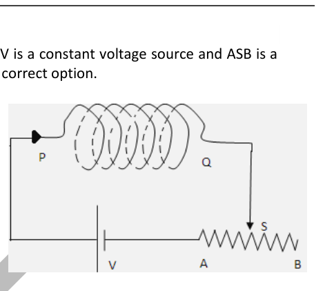
I) The (equivalent) pole at the end P if slider S of rheostat is moved from A to B is North. II) The (equivalent) pole at the end P if slider S of rheostat is moved from A to B is South. III) The (equivalent) pole at the end P if slider S of rheostat is moved from B to A is North. IV) The (equivalent) pole at the end P if slider S of rheostat is moved from B to A is South.
- (a) Only III and IV are correct
- (b) Only I and II are correct
- (c) Only II and IV are correct
- (d) Only I and III are correct
Topic: Magnetism Metodi: Ampère’s Law Competenze: Physical Reasoning Objects: Coil, Wire, Resistor, Battery Fonte: Testo (PDF) — p.10 Soluzione: Soluzioni (PDF)
Nella figura data, PQ è una lunga bobina uniforme di filo metallico, V è una fonte di tensione costante e ASB è un reostato. Considerate le seguenti affermazioni e scegliete la scelta corretta.
Quesito 28
I) Il polo (equivalente) alla fine P se il slider S del reostato viene spostato da A a B è nord. II) Il polo (equivalente) alla fine P se il slider S del reostato viene spostato da A a B è sud. III) Il polo (equivalente) alla fine P se il slider S del reostato viene spostato da B a A è nord. IV) Il polo (equivalente) alla fine P se il slider S del reostato viene spostato da B a A è sud.
- a) Solo III e IV sono corretti
- b) Solo I e II sono corretti
- c) Solo II e IV sono corretti
- (d) Solo I e III sono corretti
Topic: Magnetism Metodi: Ampère’s Law Competenze: Physical Reasoning Objects: Coil, Wire, Resistor, Battery Fonte: Testo (PDF) — p.10 Soluzione: Soluzioni (PDF)
Which of the following statements is true about the fate of glucose, following oxidation in the presence and in the absence of oxygen?
- (a) In absence of oxygen, glucose undergoes only up to glycolysis and pyruvate is converted to lactate, while in the presence of oxygen glucose undergoes only up to glycolysis and pyruvate is converted to acetyl-CoA in the mitochondria.
- (b) In absence of oxygen, glucose undergoes only up to glycolysis and pyruvate is converted to ethanol, while in the presence of oxygen glucose undergoes only up to glycolysis and pyruvate is converted to acetyl-CoA in the mitochondria.
- (c) In absence of oxygen glucose undergoes only up to glycolysis and pyruvate is converted to acetyl-CoA, while in the presence of oxygen glucose undergoes only up to glycolysis and pyruvate is converted to lactate in the muscle.
- (d) In absence of oxygen glucose undergoes only up to glycolysis and pyruvate is converted to ethanol in lactrasit cell.
Topic: Biology Metodi: Physical Modeling Competenze: Physical Reasoning Objects: — Fonte: Testo (PDF) — p.10 Soluzione: Soluzioni (PDF)
Quali delle seguenti affermazioni sono vere riguardo al destino del glucosio, dopo l’ossidazione in presenza e in assenza di ossigeno?
- (a) In assenza di ossigeno, il glucosio si trasforma solo in glicolisi e il piruvato si converte in latto, mentre in presenza di ossigeno il glucosio si trasforma solo in glicolisi e il piruvato si trasforma in acetil-CoA nelle mitocondrie.
- (b) In assenza di ossigeno, il glucosio si trasforma solo in glicolisi e il piruvato si converte in etanolo, mentre in presenza di ossigeno il glucosio si trasforma solo in glicolisi e il piruvato si trasforma in acetil-CoA nelle mitocondrie.
- (c) In assenza di ossigeno il glucosio si sottopone solo alla glicolisi e il piruvato si converte in acetilo-CoA, mentre in presenza di ossigeno il glucosio si sottopone solo alla glicolisi e il piruvato si converte in latato nel muscolo.
- (d) In assenza di ossigeno il glucosio si sottopone solo alla glicolisi e il piruvato viene convertito in etanolo nella cellula lactrasita.
Topic: Biology Metodi: Physical Modeling Competenze: Physical Reasoning Objects: — Fonte: Testo (PDF) — p.10 Soluzione: Soluzioni (PDF)
Following experiments were carried out separately in a chemistry laboratory in different test tubes.
(I) Mg + dil. HCl (II) Al + dil. HSO (III) Cu + dil. HCl (IV) Mn + dil. HNO
She observed hydrogen gas is not produced in:
- (a) Only Test tube (IV)
- (b) Both test tubes (III) and (IV)
- (c) Only test tube (III)
- (d) Both test tubes (I) and (III)
Topic: Chemistry Metodi: Physical Modeling Competenze: Physical Reasoning Objects: — Fonte: Testo (PDF) — p.10 Soluzione: Soluzioni (PDF)
I seguenti esperimenti sono stati effettuati separatamente in un laboratorio di chimica in diversi tubi di prova.
(I) Mg + dil. HCl (II) Al + dil. HSO (III) Cu + dil. HCl (IV) Mn + dil. HNO
Ha osservato che il gas idrogeno non viene prodotto in:
- a) Solo tubo di prova (IV)
- b) Entrambi i tubi di prova (III) e (IV)
- (c) Solo tubo di prova (III)
- d) Entrambi i tubi di prova (I) e (III)
Topic: Chemistry Metodi: Physical Modeling Competenze: Physical Reasoning Objects: — Fonte: Testo (PDF) — p.10 Soluzione: Soluzioni (PDF)
Section B (analytical) — Questions 31 to 42 are long questions. Marks are indicated in the brackets. Answer the questions only in the answer sheet provided.
The figure above represents the composition of human blood for an Indian individual weighing 70 kg. Assume the total fluid to be 70% of the total body weight and average density of whole blood = 1060g/l. With these considerations now calculate the following.
Quesito 31
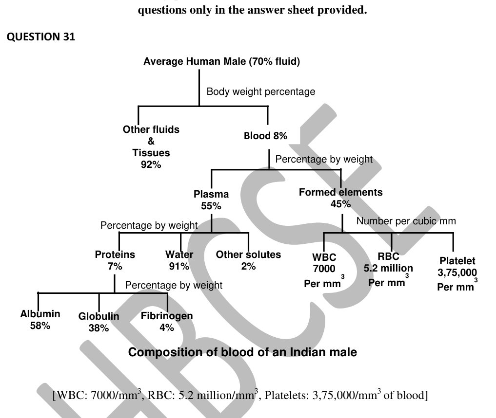
[Data: WBC: 7000/mm; RBC: 5.2 million/mm; Platelets: 3,75,000/mm of blood]
31.A. Calculate the volume of blood present in a person weighing 70 kg. [1.0]
31.B. Calculate the total number of nuclear DNA molecules that will be present in the blood of this human. Consider that the human is genetically normal. [1.0]
31.C. Calculate the total number of moles of albumin present in the total human blood as shown in the above figure. (M.W. of albumin is 66kDa and assume that 1 a.m.u = 1g) [2.0]
31.D. The following is a schematic representation of the circulatory system of humans.
Quesito 31
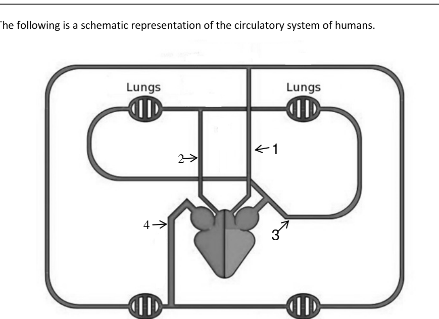
Fill the table below by selecting the correct option regarding composition of blood and direction of blood flow in regions labeled 1, 3 and 4.
| Label | Composition of blood (choose between oxygenated or deoxygenated) | Direction of flow (choose between away from or towards the heart) |
|---|---|---|
| 1 | ||
| 2 | ||
| 3 | ||
| 4 |
[2.0] [Total = 6 marks]
Topic: Biology Metodi: Physical Modeling Competenze: Unit Conversion Objects: — Fonte: Testo (PDF) — p.11 Soluzione: Soluzioni (PDF)
**Sezione B (analisi) Le domande da 31 a 42 sono domande lunghe. Le marchi sono indicate nelle cornette. Rispondere alle domande solo nella scheda di risposta fornita.
La figura di cui sopra rappresenta la composizione del sangue umano per un indiano di 70 kg. Supponiamo che il fluido totale sia del 70% del peso corporeo totale e che la densità media del sangue intero = 1060 g/l. Con queste considerazioni si calcola ora quanto segue.
Quesito 31
[Dati: WBC: 7000/mm; RBC: 5,2 milioni/mm; Tricette: 3,75,000/mm di sangue]
31.A. Calcolare il volume di sangue presente in una persona di peso di 70 kg. [1.0]
31.B. Calcolare il numero totale di molecole nucleari di DNA che saranno presenti nel sangue di questo umano. Consideriamo che l’uomo è geneticamente normale. [1.0]
31.C. Calcolare il numero totale di mole di albumina presenti nel sangue umano totale come mostrato nella figura precedente. (M.W. di albumina è di 66kDa e supponiamo che 1 a.m.u = 1g) [2.0]
31.D. La seguente è una rappresentazione schematica del sistema circolatorio umano.
Quesito 31
Compila la tabella di seguito selezionando l’ opzione corretta per la composizione del sangue e la direzione del flusso sanguigno nelle regioni etichettate 1, 3 e 4.
♬ Label Composizione del sangue (scelta tra ossigenato o disossigenato) ♬ Direzione del flusso (scelta tra lontano o verso il cuore) ♬ |---|---|---| | 1 | | | | 2 | | | | 3 | | | | 4 | | |
[2.0] [Total = 6 marchi]
Topic: Biology Metodi: Physical Modeling Competenze: Unit Conversion Objects: — Fonte: Testo (PDF) — p.11 Soluzione: Soluzioni (PDF)
32.A.(i) Alumina in nature occurs as a colourless mineral corundum. Being amphoteric it reacts with acids as well as alkalis. It is used to prepare anhydrous aluminium chloride by passing chlorine gas over heated mixture of alumina and carbon. Write the balanced chemical equation for the same. [1.0]
32.A.(ii) Double salts of the type MSO.M’(SO).24HO are called alums. Here M is univalent ion such as Na,K etc. Whereas M’ is a trivalent ion like Al, Fe etc. Potash alum [KSO.Al(SO).24HO ] the common alum is manufactured from alum shale which contains iron disulphide and aluminium silicate (AlO.xSiO) (and that is roasted in excess air to yield aluminium sulphate and ferrous sulphate. Ferrous sulphate is removed by fractional crystallisation and calculated quantity of KSO is added to the mother liquor which is concentrated to give crystals of alum. Write balanced chemical equation for roasting of alum shale. [2.0]
32.B. For quantitative analysis 3 g of mixture of sodium carbonate, sodium bicarbonate and sodium chloride was supplied to students. They found out on gentle heating, the mixture liberates 56 mL of CO at NTP and another 3 g of the same mixture requires 30.5mL of /10 hydrochloric acid for complete neutralization. Calculate the percentage of sodium chloride. [2.0] [Total = 5 marks]
Topic: Chemistry Metodi: Physical Modeling Competenze: Significant Figures Objects: — Fonte: Testo (PDF) — p.12 Soluzione: Soluzioni (PDF)
**32.A.(i) ** L’alumina si presenta in natura come corindone minerale incolore. Essendo anfetario, reagisce con acidi e alkali. Si utilizza per preparare cloruro di alluminio anidro passando gas cloro su miscela riscaldata di allumina e carbonio. Scrivi l’equazione chimica equilibrata per lo stesso. [1.0]
**32.A.(ii) ** I doppi sali del tipo MSO.M’(SO).24HO sono chiamati alumi. Qui M è uno ione univalente come Na, K ecc. Mentre M’ è un ione trivalente come Al, Fe ecc. Alumini di potassio [KSO.Al(SO).24HO ] l’alumini comune è prodotto da scisto di allumino contenente disulfuro di ferro e silicato di alluminio (AlO.xSiO) (che viene tostato in aria in eccesso per produrre sulfato di alluminio e sulfato ferroso. Il solfato ferroso viene rimosso mediante cristallizzazione frazionaria e una quantità calcolata di KSO viene aggiunta al liquore madre che viene concentrato per dare cristalli di allum. Scrivi un’equazione chimica equilibrata per il tostamento di scisto di alluminio. [2.0]
Per l’analisi quantitativa, gli studenti hanno ricevuto 3 g di miscela di carbonato di sodio, bicarbonato di sodio e cloruro di sodio. Hanno scoperto che, con un caldo delicato, la miscela libera 56 ml di CO al NTP e altri 3 g della stessa miscela richiedono 30,5 ml di /10 di acido cloridrico per una completa neutralizzazione. Calcolare la percentuale di cloruro di sodio. [2.0] [Total = 5 marchi]
Topic: Chemistry Metodi: Physical Modeling Competenze: Significant Figures Objects: — Fonte: Testo (PDF) — p.12 Soluzione: Soluzioni (PDF)
A sample of water above gives lather with soap with difficulty is known as hard water, while a sample of water which gives lather with soap easily is known as soft water.
Hardness of water is due to the presence of bicarbonates, sulphates and chlorides of calcium and magnesium. Hardness of water is of two types; temporary and permanent hardness. When hardness of water is due to the presence of bicarbonates of magnesium and calcium, it is called temporary hardness. When hardness of water is due to the presence of sulphates and chlorides of magnesium and calcium, it is called permanent hardness.
The amount of hardness causing substances in a certain volume of water measures the extent of hardness or degree of hardness. Hardness of water is always calculated in terms of calcium carbonate although it is never responsible for causing hardness of water because of its insoluble nature.
The reason for choosing calcium carbonate as the standard for calculating hardness of water is the ease in calculation as its molecular weight is exactly 100.
Degree of hardness is usually expressed as parts per million (ppm) and thus may be defined as the number of parts by weight of calcium carbonate (equivalent to calcium and magnesium salt) present in a million (10) parts by weight of water.
1ppm=1 part of CaCO in (10) parts of water.
33.I) Vishal has two samples of hard water, one contains 2mg of calcium sulphate and 0.5mg of magnesium chloride per litre of water and another contains 3mg magnesium sulphate per kg of water. Calculate the degree of hardness of both the samples. [3.5]
33.II) Permanent hardness of water can be removed by adding washing soda, if both temporary and permanent hardness are present together, then water is softened by addition of caustic soda. Give balanced chemical equations for softening of hard water. [1.5] [Total = 5 marks]
Topic: Chemistry Metodi: Physical Modeling Competenze: Physical Reasoning Objects: — Fonte: Testo (PDF) — p.13 Soluzione: Soluzioni (PDF)
Un campione di acqua sopra che dà laterine con sapone con difficoltà è conosciuto come acqua dura, mentre un campione di acqua che dà laterine con sapone facilmente è conosciuto come acqua morbida.
La durezza dell’acqua è dovuta alla presenza di bicarbonati, sulfati e cloruri di calcio e magnesio. La durezza dell’acqua è di due tipi: temporanea e permanente. Quando la durezza dell’acqua è dovuta alla presenza di bicarbonati di magnesio e calcio, si chiama durezza temporanea. Quando la durezza dell’acqua è dovuta alla presenza di solfati e cloruri di magnesio e calcio, si chiama durezza permanente.
La quantità di durezza causata da sostanze in un certo volume di acqua misura la loro dimensione o il grado di durezza. La durezza dell’acqua viene sempre calcolata in termini di carbonato di calcio, anche se non è mai responsabile della durezza dell’acqua a causa della sua natura insoluble.
La ragione per cui il carbonato di calcio è stato scelto come standard per calcolare la durezza dell’acqua è la facilità di calcolo, dato che il suo peso molecolare è esattamente 100.
Il grado di durezza è generalmente espresso in parti per milione (ppm) e può quindi essere definito come il numero di parti in peso di carbonato di calcio (equivalente al sale di calcio e magnesio) presente in un milione di parti in peso di acqua (10).
1ppm = 1 parte di CaCO in (10) parti di acqua.
** 33.I) ** Vishal ha due campioni di acqua dura, uno contiene 2 mg di solfato di calcio e 0,5 mg di cloruro di magnesio per litro di acqua e l’altro contiene 3 mg di solfato di magnesio per kg di acqua. Calcolare il grado di durezza di entrambi i campioni. [3.5]
**33.II) ** La durezza permanente dell’acqua può essere rimossa aggiungendo soda di lavaggio, se sia la durezza temporanea che quella permanente sono presenti insieme, l’acqua viene ammorbidita aggiungendo soda caustica. Fornire eccuzioni chimiche equilibrate per ammorbidire l’acqua dura. [1.5] [Total = 5 marchi]
Topic: Chemistry Metodi: Physical Modeling Competenze: Physical Reasoning Objects: — Fonte: Testo (PDF) — p.13 Soluzione: Soluzioni (PDF)
34.A. An earthen pot was filled with 20 litres of water at room temperature of 25°C and left closed. After some time it was found that the temperature of the water has dropped by 5°C while the temperature of the surrounding and the pot remained the same. How much is the amount of water remaining in the pot? [2.0]
34.B. To get a significant amount of photons of wavelength from an LED, the minimum voltage across the LED should be able to increase the energy of the electrons by an amount equal to the energy of the photons, . The value of can be taken as 1250 eV·nm. Here eV denotes electron volt and nm denotes nanometer. A voltage applied across an LED raises the energy of electron by eV.
A Light Emitting Diode (LED) of a particular brand glows with significant brightness if 20 mA current passes through it. While conducting, its resistance is practically negligible once proper voltage exists across it. A circuit is made as shown in the figure. There is a fixed series resistance of for the purpose of limiting the current and a 5 V battery is used. Assume that the voltage across the LED is the minimum required to raise the energy of the electrons equal to the energy of the light photon needed. Estimate the resistance range of the rheostat if light from wavelength 625 nm (orange-red) to 500 nm (green-cyan) is to be emitted by the LED. [3.0]
Quesito 34
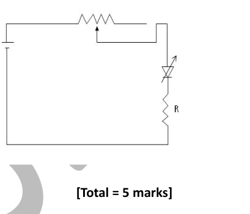
[Total = 5 marks]
Topic: Thermodynamics, Modern-Quantum Physics Metodi: Photon Energy Relation Competenze: Physical Reasoning Objects: Container, Resistor, Battery, Photon, Electron Fonte: Testo (PDF) — p.14 Soluzione: Soluzioni (PDF)
34.A. Un vaso di terra è stato riempito di 20 litri di acqua a temperatura ambiente di 25°C e lasciato chiuso. Dopo un certo tempo è stato riscontrato che la temperatura dell’acqua è scesa di 5°C mentre la temperatura del ambiente circostante e del vaso è rimasta la stessa. Quanto è la quantità di acqua rimasta nel vaso? [2.0]
34.B. Per ottenere una quantità significativa di fotoni di lunghezza d’onda da un LED, la tensione minima attraverso il LED deve essere in grado di aumentare l’energia degli elettroni di una quantità pari all’energia dei fotoni, . Il valore di può essere preso come 1250 eV·nm. Qui eV indica l’elettrone volt e nm indica il nanometro. Una tensione applicata su un LED aumenta l’energia dell’elettrone di eV.
Un diodo di emissione luminosa (LED) di un particolare marchio risplende con una luminosità significativa se attraversa una corrente di 20 mA. Durante la conduttività, la sua resistenza è praticamente trascurabile una volta che esiste una voltage adeguata. Si realizza un circuito come mostrato nella figura. Si dispone di una resistenza di serie fissa di per limitare la corrente e viene utilizzata una batteria da 5 V. Supponiamo che la tensione attraverso il LED sia il minimo necessario per aumentare l’energia degli elettroni pari all’energia del fotone di luce necessaria. Calcolare l’intervallo di resistenza del reostato se la luce da 625 nm (arancio-rosso) a 500 nm (ciano verde) deve essere emessa dal LED. [3.0]
Quesito 34
[Total = 5 marchi]
Topic: Thermodynamics, Modern-Quantum Physics Metodi: Photon Energy Relation Competenze: Physical Reasoning Objects: Container, Resistor, Battery, Photon, Electron Fonte: Testo (PDF) — p.14 Soluzione: Soluzioni (PDF)
(For question I – IV, provide only the correct option number in your answer sheet.)
Drosophila melanogaster (fruit fly) is a favorite among geneticists to study inheritance of characters. Like other insects the life cycle of Drosophila consists of larvae, pupae and adults (see below).
It can be easily maintained in the laboratory, has a short life cycle, produces large number of eggs and have only four pairs of chromosomes. The inheritance of eye color and shape, have been studied by many geneticists. The eye shape could be round or slit-like (called Bar eyed).
The allele that controls the Bar-eyed phenotype (B) is dominant over that which controls round shape (b). Although found in the laboratories, the occurrence of Bar-eyed fruit fly is rare.
Quesito 35
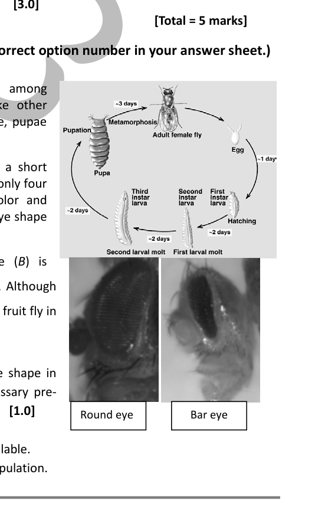
35.I) A geneticist wanted to study the inheritance of eye shape in Drosophila. Which one of the following is the necessary pre-requisite to study inheritance of any character? [1.0]
- a) Life cycle should be short.
- b) A homozygous line for the character should be available.
- c) Variation in character should be available in the population.
35.II) From the information given in the write-up which of the following statement(s) is/are correct? [0.5]
- a) Bar eye is a mutant character because it is dominant over round.
- b) Bar eye is a mutant character because it is found rarely in the nature.
- c) Round eye is a mutant character because it is dominant over Bar.
35.III) A Bar-eyed Drosophila could be homozygous (BB) or heterozygous (Bb) for the gene controlling the bar-eye shape. In order to differentiate between the two genotypes a geneticist should cross it to a fly with the genotype [0.5]
- a) BB
- b) Bb
- c) bb
35.IV) Variations in phenotypes in Drosophila can be generated in the laboratory by mutagenesis. X-ray is a known mutagen. In order to generate mutants in Drosophila which one of the following stages in its life cycle should be treated with X-ray? [0.5]
- a) Egg
- b) Larvae
- c) Pupae
- d) Adult
35.V) The following is a hypothetical situation. A geneticist studies the inheritance of eye shape and color in a newly identified insect. Like Drosophila there are two eye shapes in this insect: round and bar. Round is dominant in this case. There are two eye colors: red and white, where red is dominant over white. Genes for eye color and eye shape are present on the autosomes.
(a) A cross is made between a red, round-eyed and bar, white-eyed insect. What will be the phenotype of the F progeny? [0.5]
(b) When the F progeny were crossed the following F progeny (phenotype: numbers) was obtained: Red, round eyed : 899 / Red, bar eyed : 301 / White, round eyed : 299 / White, bar eyed : 107. Based on the above data do the genes for eye color and shape show independent assortment? Yes/No. [1.0]
(c) Calculate the ratio obtained from the given F progenies provided as above to prove your choice in (b). [1.0] [Total = 5 marks]
Topic: Biology Metodi: Physical Modeling Competenze: Physical Reasoning Objects: — Fonte: Testo (PDF) — p.14 Soluzione: Soluzioni (PDF)
**(Per la domanda I IV, inserire solo il numero corretto della scelta nella scheda di risposta.) **
La drosofila melanogaster (MSK1/) è una delle mosche di frutta preferita dai genetici per studiare l’eredità dei caratteri. Come gli altri insetti, il ciclo di vita di Drosophila è costituito da larve, pupe e adulti (vedere sotto).
Può essere facilmente mantenuto in laboratorio, ha un ciclo di vita breve, produce un gran numero di uova e ha solo quattro coppie di cromosomi. L’eredità del colore e della forma degli occhi, sono state studiate da molti genetisti. La forma degli occhi potrebbe essere rotonda o fessura (chiamata “occhio di bar”).
L’alelo che controlla il fenotipo a occhi di Bar (B) è dominante su quello che controlla la forma rotonda (b). Sebbene si trovino nei laboratori, la presenza di mosche di frutta a occhi barrati è rara.
Quesito 35
Un genetista ha voluto studiare l’ eredità della forma degli occhi in Drosophila. Quale delle seguenti condizioni è necessaria per studiare l’eredità di un qualsiasi carattere? [1.0]
- a) Il ciclo di vita deve essere breve.
- b) Deve essere disponibile una linea omosigota per il personaggio.
- c) La variazione di carattere deve essere disponibile nella popolazione.
**35.II) ** Dalle informazioni fornite nella redazione, quale delle seguenti dichiarazioni è/sono corretta? [0.5]
- a) L’occhio di barra è un carattere mutante perché è dominante in tutto il mondo.
- b) L’occhio di bar è un carattere mutante perché si trova raramente nella natura.
- c) L’occhio rotondo è un carattere mutante perché domina il Bar.
** 35. III) ** Un drosofila * Drosofila * potrebbe essere omosigoto (BB) o eterosigoto (Bb) per il gene che controlla la forma dell’ occhio a barre. Per distinguere i due genotipi un genetista dovrebbe incrociarlo in una mosca con il genotipo [0.5]
- a) BB
- b) Bb
- c) bb
** 35. IV) ** Le variazioni dei fenotipi in Drosophila possono essere generate in laboratorio mediante mutagenesi. Le radiografie sono un mutageno noto. Per generare mutanti in Drosophila quale delle seguenti fasi del suo ciclo di vita deve essere trattata con raggi X? [0.5]
- a) uovo
- b) Larve
- c) Pupi
- d) Adulto
** 35.V) ** La seguente è una situazione ipotetica. Un genetista studia l’eredità della forma e del colore degli occhi in un insetto appena identificato. Come la drosofila, in questo insetto ci sono due forme oculari: rotonda e barata. Il round è dominante in questo caso. Ci sono due colori oculari: rosso e bianco, dove il rosso è dominante sul bianco. I geni per il colore degli occhi e la forma degli occhi sono presenti sugli autosomi.
(a) Si fa un incrocio tra un insetto rosso, di occhi rotondi e un insetto bianco. Qual sarà il fenotipo della progenie F? [0.5]
b) Quando la progenie F è stata incrociata è stata ottenuta la seguente progenie F (fenotipo: numeri): rosso, occhio rotondo: 899 / rosso, occhio a barra: 301 / bianco, occhio a barra: 299 / bianco, occhio a barra: 107. Sulla base dei dati sopra indicati, i geni per il colore e la forma degli occhi mostrano un assortimento indipendente? Sì/No. [1.0]
(c) Calcolare il rapporto ottenuto dai dati F progenie forniti come sopra per dimostrare la scelta in (b). [1.0] [Total = 5 marchi]
Topic: Biology Metodi: Physical Modeling Competenze: Physical Reasoning Objects: — Fonte: Testo (PDF) — p.14 Soluzione: Soluzioni (PDF)
36.A. In the circuit diagram given, on removing the resistor , it is necessary to have an additional resistance in series with the resistance, so that the current through resistor is unchanged. Determine . [2.0]
Quesito 36
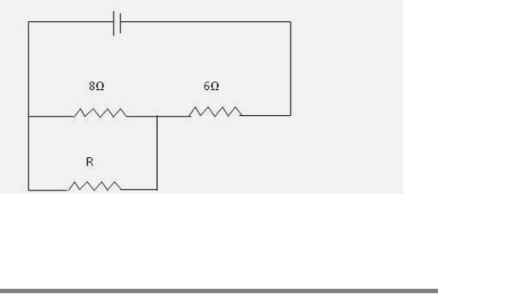
36.B. A battery of mobile phone of rating 3.6 V, 3600 mAh (practically) loses its complete charge in 24 hrs when connected to a mesh on the largest diagonal points (between A & C or between D & B) shown below. What is the value of resistance of individual arm? (All arms have same resistance.) How long will the battery last if it is connected across one of the outer arms, say DC (or CB or AB or BC)? Assume that the battery voltage remains constant throughout its discharge. [3.0]
Quesito 36
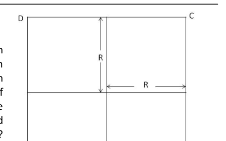
[Total = 5 marks]
Topic: Circuits Metodi: Equivalent Circuit Reduction, Kirchhoff’s Laws Competenze: Mathematical Modeling Objects: Resistor, Battery Fonte: Testo (PDF) — p.15 Soluzione: Soluzioni (PDF)
36.A. Nel diagramma di circuito fornito, per rimuovere la resistenza , è necessario avere una resistenza aggiuntiva in serie con la resistenza , in modo che la corrente attraverso la resistenza sia invariata. Determina . [2.0]
Quesito 36
36.B. Una batteria di telefono cellulare di 3,6 V, 3600 mAh (praticamente) perde la sua carica completa in 24 ore quando è collegata a una rete nei punti diagonali più grandi (tra A e C o tra D e B) riportati di seguito. Qual è il valore di resistenza di singolo braccio? Quanto durerà la batteria se è collegata attraverso uno dei bracci esterni, diciamo DC (o CB o AB o BC)? Supponiamo che la tensione della batteria rimanga costante durante il suo scarico. [3.0]
Quesito 36
[Total = 5 marchi]
Topic: Circuits Metodi: Equivalent Circuit Reduction, Kirchhoff’s Laws Competenze: Mathematical Modeling Objects: Resistor, Battery Fonte: Testo (PDF) — p.15 Soluzione: Soluzioni (PDF)
(Provide only the correct option number in your answer sheet.)
37.A. Spermatogenesis and oogenesis are processes of formation of the male and the female gametes as shown below.
Quesito 37
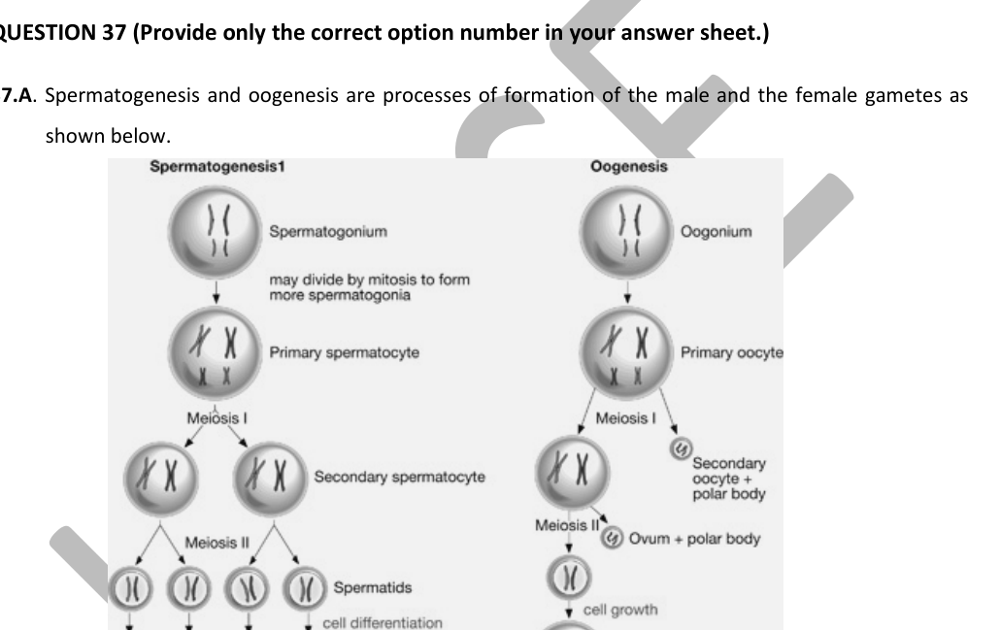
Answer the following questions related to gamete formation.
37.I) If accidentally the primary oocyte is fertilized with a sperm, the resulting zygote will have how many sets of chromosomes? [0.5]
- a) n
- b) 2n
- c) 3n
- d) 4n
37.II) The middle piece of the sperm contains: [0.5]
- a) Mitochondrial DNA only
- b) No DNA at all
- c) Nuclear DNA only
- d) Nuclear and mitochondrial DNA both
37.III) The most plausible reason for the formation of polar bodies during oocyte development is [0.5]
- a) to retain large quantity of cytoplasm in the oocyte.
- b) to retain chromosomes in the egg.
- c) to retain both chromosomes and cytoplasm in the oocyte.
- d) to retain the egg membrane which is essential for fertilization.
37.IV) Which one of the following statements is true regarding nuclear DNA development? [0.5]
- a) Primary oocytes are produced after a female attains puberty (post puberty).
- b) Primary oocytes are already produced in the ovary when a girl is born.
- c) Primary oocytes are produced in the ovary just before the female attains puberty.
37.B. ‘Triple parent’ is a novel concept of creating embryos using DNA from three people. This technique can prevent passing of genetic diseases due to defects in mitochondria from a mother to her babies. This technique involves removing the nuclear DNA from a healthy female donor’s eggs and replacing it with the nuclear DNA of the prospective mother. After fertilization, the resulting child would inherit the mother’s nuclear DNA and the donor’s healthy mitochondrial DNA. If approved for use, the technique would allow a woman to give birth to a baby who would inherit the normal nuclear DNA but not the defective mitochondrial DNA.
37.C) The concept of a triple parent involves: [0.5]
- a) Three females and no requirement of male.
- b) One male and two females in which the other parent (female donor) is not genetically involved.
- c) One male and two females all contributing genetically.
- d) One female and two males, all contributing genetically.
37.D) Given below are few statements regarding triple parent technique. Mark them as true (T) or false (F), by identifying them as either correct or incorrect statements. [2.5]
- a) This technique can also be useful for father with defective mitochondrial genes.
- b) The technique will not work for mother or father with defective nuclear genes.
- c) The child produced by the technique will contain some foreign genes from a third parent.
- d) The chance of transmission of foreign gene to the next generation (by normal reproduction involving two parents) will be almost zero if the triple parent technique generates a male.
- e) The offspring produced by the triple parent technique will be affected if the third parent has a genetic defect in the nuclear genes.
[Total = 5 marks]
Topic: Biology Metodi: Physical Modeling Competenze: Physical Reasoning Objects: — Fonte: Testo (PDF) — p.16 Soluzione: Soluzioni (PDF)
**(Fornisci solo il numero di opzione corretto nella scheda di risposta.) **
37.A. Spermatogenesi e oogenesis sono processi di formazione dei gameti maschili e femminili come mostrato di seguito.
Quesito 37
Rispondi alle seguenti domande relative alla formazione dei gameti.
Se accidentalmente l’ovocito primario viene fecondato con uno sperma, la zigota risultante avrà quante serie di cromosomi? [0.5]
- a) n
- b) 2n
- c) 3n
- d) 4n
**37.II) ** Il pezzo medio dello sperma contiene: **[0,5] **
- a) Solo il DNA mitocondriale
- b) Nessun DNA
- c) Solo DNA nucleare
- d) DNA nucleare e mitocondriale
**37.III) ** La ragione più plausibile per la formazione di corpi polari durante lo sviluppo degli ovociti è [0.5]
- a) conservare una grande quantità di citoplasma nell’ovocito.
- b) per conservare i cromosomi nell’uovo.
- c) conservare sia i cromosomi che il citoplasma nell’ovocito.
- d) mantenere la membrana ovulata essenziale per la fecondazione.
**37.IV) ** Quali delle seguenti affermazioni sono vere per quanto riguarda lo sviluppo del DNA nucleare? [0.5]
- a) Gli ovociti primari sono prodotti dopo che la femmina raggiunge la pubertà (post pubertà).
- b) Gli ovociti primari sono già prodotti nell’ovario quando nasce una bambina.
- c) Gli ovociti primari vengono prodotti nell’ovario poco prima che la femmina raggiunga la pubertà.
37.B. “Tri genitori” è un concetto nuovo di creazione di embrioni utilizzando il DNA di tre persone. Questa tecnica può impedire il passaggio di malattie genetiche dovute a difetti mitocondrici da una madre ai suoi bambini. Questa tecnica prevede la rimozione del DNA nucleare da uova di donne sane e la sostituzione con il DNA nucleare della futura madre. Dopo la fecondazione, il bambino che ne deriva ereditaria il DNA nucleare della madre e il DNA mitocondriale sano del donatore. Se approvata per l’uso, la tecnica consentirebbe a una donna di dare alla luce un bambino che erediterebbe il normale DNA nucleare ma non il DNA mitocondriale difettoso.
**37.C) ** Il concetto di madre tripla comprende: [0,5]
- a) Tre femmine e nessun requisito di maschio.
- b) un maschio e due femmine in cui l’altro genitore (donatore femmina) non è geneticamente coinvolto.
- c) un maschio e due femmine che contribuiscono tutti geneticamente.
- d) Una femmina e due maschi, tutti geneticamente contribuenti.
** 37.D) ** Qui di seguito sono riportate poche affermazioni relative alla tecnica del triplo genitore. Segnalatelo come vero (T) o falso (F), identificandolo come affermazioni corrette o errate. [2.5]
- a) Questa tecnica può essere utile anche per i padri con geni mitocondriali difettosi.
- b) La tecnica non funzionerà per la madre o il padre con geni nucleari difettosi.
- c) Il bambino prodotto dalla tecnica contiene alcuni geni stranieri di un terzo genitore.
- d) La probabilità di trasmissione di geni estranei alla generazione successiva (per riproduzione normale con due genitori) sarà quasi zero se la tecnica del triplo genitore genera un maschio.
- e) La prole prodotta dalla tecnica del triplo genitore sarà colpita se il terzo genitore presenta un difetto genetico nei geni nucleari.
[Total = 5 marchi]
Topic: Biology Metodi: Physical Modeling Competenze: Physical Reasoning Objects: — Fonte: Testo (PDF) — p.16 Soluzione: Soluzioni (PDF)
38.A. An artificially prepared dense glass is used to prepare imitation jewelry. Consider a hemisphere of such a glass placed with its flat surface horizontal. The figure shows a vertical cross section of the hemisphere passing through its centre C. A wide, parallel beam of monochromatic light (for which, the refractive index of this glass is ) falls on the flat surface, in the plane of drawing, at an angle of incidence . Is it possible that all the rays of this beam emerge from the spherical surface? (You may use )
If your answer is YES, give the range of corresponding angles of emergence. If your answer is NO, determine the part of the spherical surface (shown in the figure) through which the emergence is possible. You may state your answer in terms of the angles made by the extreme points of the spherical surface at the centre. [3.0]
Quesito 38
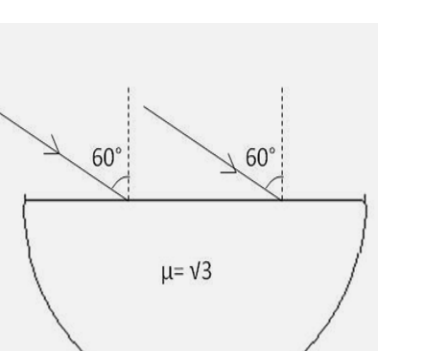
38.B. A 7 m long uniform rope of mass 140 g is hanging freely from a ceiling. A transverse pulse is generated at the free end, which travels up to the top. Speed of wave (or pulse) along a string is given by , where is tension along the string and is the linear density. Using m/s, calculate the speed of the pulse at 5 different distances at every 1 m from free end. Plot variation in the speed against the distance from the bottom. Using your graph determine the speed of the pulse at the midpoint of the string. [2.0] [Total = 5 marks]
Topic: Geometric Optics Metodi: Snell’s Law, Ray Tracing Competenze: Physical Reasoning Objects: String Fonte: Testo (PDF) — p.18 Soluzione: Soluzioni (PDF)
38.A. Per la preparazione di imitazioni di gioielli si utilizza un vetro denso preparato artificialmente. Considera un’emisfera di questo vetro posizionato con la superficie piatta orizzontale. La figura mostra una sezione trasversale verticale dell’emisfero che attraversa il suo centro C. Un raggio largo, parallelo di luce monocromatica (per il quale l’indice di rifrazione di questo vetro è ) cade sulla superficie piana, nel piano di disegno, ad un angolo di incidenza . E’ possibile che tutti i raggi di questo raggio emergano dalla superficie sferica? (Puoi usare )
Se la risposta è SI, indicare la gamma di angoli di emergenza corrispondenti. Se la risposta è NO, determinare la parte della superficie sferica (visto nella figura) attraverso la quale l’emergere è possibile. La risposta può essere data in termini di angoli realizzati dai punti estremi della superficie sferica al centro. [3.0]
Quesito 38
38.B. Una corda uniforme di 7 m di massa di 140 g è appesa liberamente dal soffitto. Un impulso trasversale viene generato all’estremità libera, che viaggia fino in cima. La velocità di onda (o di impulso) lungo una corda è data da , dove è la tensione lungo la corda e è la densità lineare. Usando m/s, calcolare la velocità del polso a 5 distanze diverse ad ogni 1 m dall’estremità libera. Variazione della velocità rispetto alla distanza dal basso. Utilizzando il grafico, determina la velocità del polso al centro della corda. [2.0] [Total = 5 punti]
Topic: Geometric Optics Metodi: Snell’s Law, Ray Tracing Competenze: Physical Reasoning Objects: String Fonte: Testo (PDF) — p.18 Soluzione: Soluzioni (PDF)
39.A. A hydrocarbon contained 10.5g of carbon per gm of hydrogen. One litre of the hydrocarbon vapours at 127°C and 1 atm pressure weighed 2.6g. Help Sakshi to find the molecular formula of the hydrocarbon. [3.0]
39.B. 40 mL of mixture of hydrogen and oxygen gases was placed in a eudiometer at 48°C and 1 atm pressure. A spark was applied so that the formation of water is complete. The volume of the remaining hydrogen gas was 10 ml at 48°C and 1 atm pressure. Find the initial mole percentage of hydrogen in the mixture. [2.0] [Total = 5 marks]
Topic: Chemistry Metodi: Ideal Gas Law Competenze: Significant Figures Objects: — Fonte: Testo (PDF) — p.18 Soluzione: Soluzioni (PDF)
39.A. Un idrocarburi contenente 10,5 g di carbonio per gm di idrogeno. Un litro di vapori di idrocarburi a 127°C e una pressione di 1 atm pesavano 2,6 g. Aiuta Sakshi a trovare la formula molecolare dell’idrocarburi. [3.0]
39.B. 40 ml di miscela di gas idrogeno e ossigeno sono stati inseriti in un eudiometro a 48°C e pressione di 1 atm. Una scintilla fu applicata per completare la formazione dell’acqua. Il volume del gas idrogeno rimanente è stato di 10 ml a 48°C e a 1 atm di pressione. Trova la percentuale iniziale di mole di idrogeno nella miscela. [2.0] [Total = 5 punti]
Topic: Chemistry Metodi: Ideal Gas Law Competenze: Significant Figures Objects: — Fonte: Testo (PDF) — p.18 Soluzione: Soluzioni (PDF)
(For question III – VI, provide only the correct option number in your answer sheet.)
Quesito 40
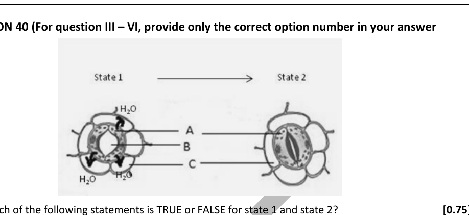
40.I) Which of the following statements is TRUE or FALSE for state 1 and state 2? [0.75]
- a) State 1 is observed specifically on the adaxial surface of mesophytic leaf during day time.
- b) State 2 is obtained when guard cells absorb moisture from sub-stomatal cavity.
- c) Uneven thickness of guard cell wall favours the stomatal movement.
40.II) When one of the figures and fill in the blanks. [1.75] The labeled region designated as ‘A’ in the figure above is/are the epidermal cell(s) with (i) ___ (chloroplast/modoplast/leucoplast), in daylight (the region labeled as ‘A’) makes carbohydrates by the process of (ii) ___ (chemosynthesis/photosynthesis/ respiration). This (iii) ___ (increases/decreases) the water potential of the region ‘A’. Water enters cell by (iv) ___ (endosmosis/diffusion/pinocytosis) whereby water moves from (v) ___ (higher/lower) water potential to (vi) ___ (higher/lower) water potential. Now, the region ‘B’ reaches state 1 due to (vii) ___ (increase/decrease) in turgidity.
40.III) Closing of stomata is likely to cause the following physiological changes EXCEPT [0.25]
- a) Decrease in the rate of photosynthesis.
- b) Decrease in the rate of transpiration.
- c) Decrease in the rate of nitrogen fixation.
- d) Decrease in the rate of water uptake.
40.IV) Which one of the following represents the correct statement about the tonicity of environment around cell A in state 1? [0.25]
- a) The environment is hypertonic with respect to cell A.
- b) The environment is hypotonic with respect to cell A.
- c) The environment is isotonic with respect to cell A.
40.V) Water Potential is the difference in the free energy or chemical potential per unit molar volume of water in a system compared to that of pure water at the same temperature and pressure. Water potential of pure water at normal temperature and pressure is zero. This value is considered to be the highest. The presence of solid particles reduces the free energy of water and decreases the water potential. Therefore, water potential of a solution is always less than zero or it has negative value. If the water potential (Ψ) of a plant cell is at extended period of time. State 1 means the cell is at an extended period of time. State 2 means the cell is at an extended period of time. State 1 means the cell is at an extended period of time. [0.5]
- a) Stoma remains in state 1 for an extended period of time.
- b) Stoma remains in state 2 for an extended period of time.
- c) The stomatal pore gets blocked by the chemical.
40.VI) The water potential (Ψ) of a plant cell is at extended period of time. When the water potential (Ψ) of the cell of a plant is −2.0 bar and that of distilled water is measured as 0.0 MPa and the water potential (Ψ) of 0.2M glucose solution is −0.23 MPa, what will happen if guard cells are placed in 0.1M glucose solution. [0.25]
- a) Glucose will flow into guard cells.
- b) Water will flow into the guard cell.
- c) Water will flow out from the guard cell.
- d) Nothing will happen as the process will also depend on energy input.
40.VII) When chemical “X” is sprayed on plants, it results in wilting. The probable explanation for this is: [0.75]
- a) Stoma remains in state 1 for an extended period of time.
- b) Stoma remains in state 2 for an extended period of time.
- c) The stomatal pore gets blocked by the chemical.
[Total = 4 marks]
Topic: Biology Metodi: Physical Modeling Competenze: Physical Reasoning Objects: — Fonte: Testo (PDF) — p.19 Soluzione: Soluzioni (PDF)
**(Per la domanda III VI, inserire solo il numero di opzione corretto nella scheda di risposta.) **
Quesito 40
**40.I) ** Quali delle seguenti affermazioni sono TRUE o FALSE per lo stato 1 e lo stato 2? [0.75]
- a) Il stato 1 è osservato specificamente sulla superficie adassiale della foglia mesofetica durante il giorno.
- b) Lo stato 2 si ottiene quando le cellule di guardia assorbono l’ umidità dalla cavità sub-stomataria.
- c) Lo spessore disunibile della parete cellulare di guardia favorisce il movimento stomatico.
**40.II) ** Quando uno dei numeri e riempire i vuoti. [1.75] La regione etichettata designata come “A” nella figura di cui sopra è/sono la cellula epidermale con (i) ___ (cloroplast/modoplast/leucoplast), durante il giorno (la regione etichettata come “A”) produce carboidrati mediante il processo di (ii) ___ (chemosintesi/fotosintesi/respirazione). Questo (iii) ___ (aumenta/diminuisce) il potenziale idrico della regione “A” **. L’acqua entra nella cellula con (iv) ___ (endosmosi/diffusione/pinocitosi) in cui l’acqua passa da (v) ___ (potenziale superiore/inferio) all’acqua (vi) ___ (potenziale superiore/inferio). Ora, la regione **B ** raggiunge lo stato 1 a causa di (vii) ___ (aumento/diminuizione) della turgidità.
**40.III) ** Chiusura dello stomaco è probabile che provochi i seguenti cambiamenti fisiologici EXCETTO **[0.25] **
- a) Diminuzione del tasso di fotosintesi.
- b) Diminuzione del tasso di traspirazione.
- diminuzione del tasso di fissazione dell’azoto.
- d) Riduzione del tasso di assorbimento dell’acqua.
**40.IV) ** Quale delle seguenti indicazioni rappresenta la corretta affermazione sulla tonicalità dell’ambiente intorno alla cellula A nello stato 1? [0.25]
- a) L’ambiente è ipertonico rispetto alla cellula A.
- b) L’ambiente è ipotonicamente elevato rispetto alla cellula A.
- c) L’ambiente è isotonica rispetto alla cellula A.
**40.V) ** Potenziale dell’acqua è la differenza di energia libera o potenziale chimico per unità di volume molare di acqua in un sistema rispetto a quella di acqua pura alla stessa temperatura e pressione. Il potenziale idrico dell’acqua pura a temperatura e pressione normali è zero. Tale valore è considerato il più alto. La presenza di particelle solide riduce l’energia libera dell’acqua e riduce il potenziale dell’acqua. Pertanto, il potenziale idrico di una soluzione è sempre inferiore a zero o ha un valore negativo. Se il potenziale idrico (Ψ) di una cellula vegetale è a lungo termine. Stato 1 significa che la cella è in un periodo di tempo prolungato. Stato 2 significa che la cellula è in un periodo di tempo prolungato. Stato 1 significa che la cella è in un periodo di tempo prolungato. [0.5]
- a) Lo stoma rimane nello stato 1 per un periodo prolungato di tempo.
- b) Lo stoma rimane nello stato 2 per un periodo prolungato di tempo.
- c) Il poro stomatico viene bloccato dalla sostanza chimica.
**40.VI) ** Il potenziale idrico (Ψ) di una cellula vegetale è a lungo termine. Quando il potenziale idrico (Ψ) della cellula di una pianta è di −2,0 bar e quello dell’acqua distillata è misurato come 0,0 MPa e il potenziale idrico (Ψ) di una soluzione di glucosio di 0,2 M è di −0,23 MPa, cosa accadrà se le cellule di guardia vengono collocate in una soluzione di glucosio di 0,1 M. [0.25]
- a) Il glucosio fluirà nelle cellule di guardia.
- b) L’acqua scorrera’ nella cella di guardia.
- c) L’acqua scaturirà dalla cella di guardia.
- d) Non si avverrà nulla, poiché il processo dipenderà anche dall’ingresso di energia.
Quando la sostanza chimica “X” viene spruzzata sulle piante, si produce una depilazione. La spiegazione probabile è: [0.75]
- a) Lo stoma rimane nello stato 1 per un periodo prolungato di tempo.
- b) Lo stoma rimane nello stato 2 per un periodo prolungato di tempo.
- c) Il poro stomatico viene bloccato dalla sostanza chimica.
[Total = 4 punti]
Topic: Biology Metodi: Physical Modeling Competenze: Physical Reasoning Objects: — Fonte: Testo (PDF) — p.19 Soluzione: Soluzioni (PDF)
During respiration, glucose combines with oxygen in the cells of our body to form carbon dioxide, water and production of energy. Atmospheric air consists of 20 % oxygen by volume, only 5% of that oxygen is consumed by the body in each breath of an average person at STP. According to the study an average person at rest inhales 8 litres of air per minute. In 3.5 hrs, how much glucose is used up by an average person at rest? Find the amount of carbon dioxide exhaled during the process. [5.0] [Total = 5 marks]
Topic: Biology, Chemistry Metodi: Ideal Gas Law Competenze: Unit Conversion Objects: — Fonte: Testo (PDF) — p.20 Soluzione: Soluzioni (PDF)
Durante la respirazione, il glucosio si unisce all’ossigeno nelle cellule del nostro corpo per formare anidride carbonica, acqua e produzione di energia. L’aria atmosferica è costituita da 20 per cento di ossigeno in volume, solo il 5 per cento di questo ossigeno viene consumato dal corpo in ogni respiro di una persona media a STP. Secondo lo studio, una persona in sospeso inala in media 8 litri di aria al minuto. In 3,5 ore, quanto glucosio viene consumato da una persona media a riposo? Trova la quantità di anidride carbonica esolata durante il processo. [5.0] [Total = 5 marchi]
Topic: Biology, Chemistry Metodi: Ideal Gas Law Competenze: Unit Conversion Objects: — Fonte: Testo (PDF) — p.20 Soluzione: Soluzioni (PDF)
Hydrogen has two isotopes: Hydrogen (H), whose nucleus has one proton only, and deuteron (D) which has one proton and one neutron in the nucleus. Heavy water is formed when one or both hydrogen nuclei are replaced by Deuterons, i.e. making it HDO or DO.
A scientist takes 40 percent (volume) of heavy water DO and 60 percent (volume) HO and thoroughly mixes it to make a total of 1000 L. DO and HO have nearly similar physical and chemical properties. Also assume that HDO, the other form of heavy water, does not get formed.
The scientist is conducting an experiment to calculate the specific heat capacity of DO in its frozen stage. As a first step he freezes it to exactly 0°C and then heats it slowly in a chamber which is thermally insulated from atmosphere. After providing 387160 kJ of energy the combination reaches 10°C. Given the data, calculate the specific heat of ice formed from DO and give the graphical representation (qualitative, with appropriate values marked) of the entire process on the axes drawn on the graph paper provided in the answer sheet. [5.0] [Total = 5 marks]
Topic: Thermodynamics Metodi: Physical Modeling Competenze: Experimental Data Analysis Objects: — Fonte: Testo (PDF) — p.20 Soluzione: Soluzioni (PDF)
L’idrogeno ha due isotopi: l’idrogeno (H), il cui nucleo ha un solo protone, e il deuteron (D), che ha un protone e un neutrone nel nucleo. L’acqua pesante si forma quando uno o entrambi i nuclei di idrogeno vengono sostituiti da Deuteroni, cioè che lo rendano HDO o DO.
Uno scienziato prende il 40% (volume) di acqua pesante DO e il 60% (volume) HO e la mescola a fondo per formare un totale di 1000 L. DO e HO hanno proprietà fisiche e chimiche quasi simili. Supponiamo anche che l’HDO, l’altra forma di acqua pesante, non si formi.
Lo scienziato sta conducendo un esperimento per calcolare la capacità termica specifica di DO nella sua fase di congelamento. In primo luogo, lo congela esattamente a 0°C e poi lo riscaldano lentamente in una camera termicamente isolata dall’atmosfera. Dopo aver fornito 387160 kJ di energia, la combinazione raggiunge 10°C. Data la data, calcolare il calore specifico del ghiaccio formato da DO e fornire la rappresentazione grafica (qualitativa, con valori indicati appropriatamente) dell’intero processo sugli assi disegnata sulla carta grafica fornita nella scheda di risposta. [5.0] [Total = 5 marchi]
Topic: Thermodynamics Metodi: Physical Modeling Competenze: Experimental Data Analysis Objects: — Fonte: Testo (PDF) — p.20 Soluzione: Soluzioni (PDF)